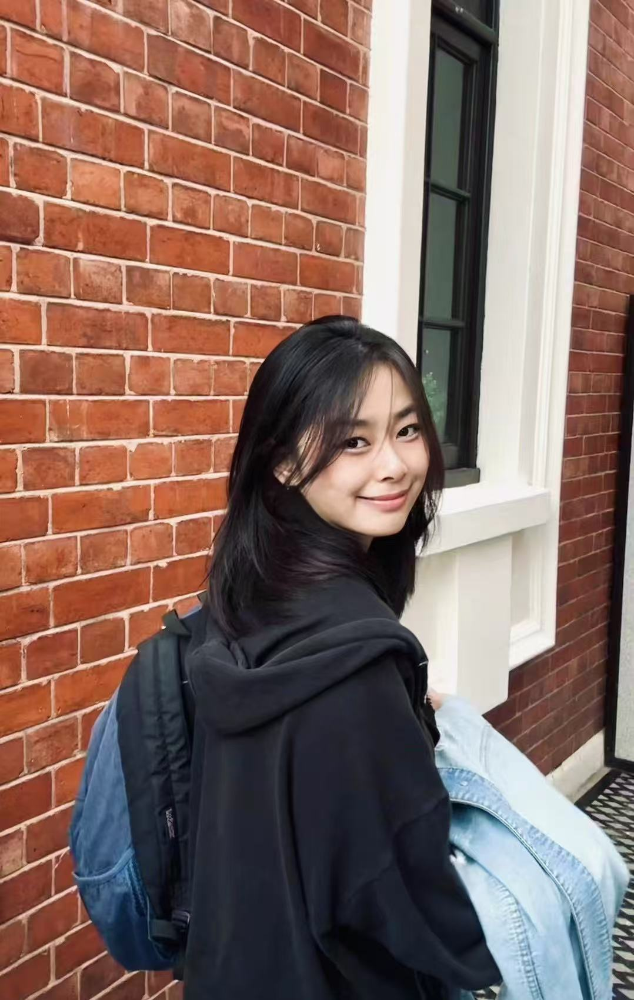

BIOGRAPHY / CONTACT
关于王璐
艺术创作 · 自主策展实践 · 艺术内容
当前策展实践
Chairs｜以椅子为主视觉的本册系列 ↗2026 · 自主线上策展 · 策展与作品：王璐
ABOUT / WANG LU
创作，也让创作被理解。

我的实践连接个人图像创作、制作协作与面向受众的表达。希望在艺术机构、工作坊、文化项目或创意品牌中，把这些经验用于具体的全职工作。
教育背景
广州美术学院 · 硕士，版画方向
2026 年 6 月毕业
韶关学院 · 本科，美术学
2018.09—2022.06
交换项目 · 2025.09—2026.09
工作工具
Photoshop · InDesign
Figma · Procreate
CapCut / 剪映 · Office
以上工具均熟练使用；经常进行视频剪辑。
语言沟通
中文；日常英语沟通流畅，可用英语进行工作沟通、面试和作品讲解。持有 CET-4 证书。
求职方向
艺术机构与工作坊执行
艺术内容与新媒体
插画、文创与视觉设计
SELECTED RECOGNITION
展览与收藏
艺术实践中的部分入选与收藏记录。
第十一届广东省版画作品展
《动物世界》入选 · 广东省美术家协会
湖南美术馆收藏
《Zoom》· 13.5 × 9 cm · 收藏证书编号 20250237
蛇年生肖复数艺术大展
《灵蛇献瑞》被收藏 · 中央美术学院国际学院
香港「黄永玉」国际青年版画艺术家扶持计划
2025 年度入围 · 8 月 4—6 日于香港会议展览中心展览
《母系族谱》
PASSE-MURAILLES · 法国阿维尼翁
城市与到岗安排
广州／汕头：可随时到岗。
深圳／北京／上海：约一个月后到岗。
正职 · 接受周末排班 · 中国公民，可在中国工作